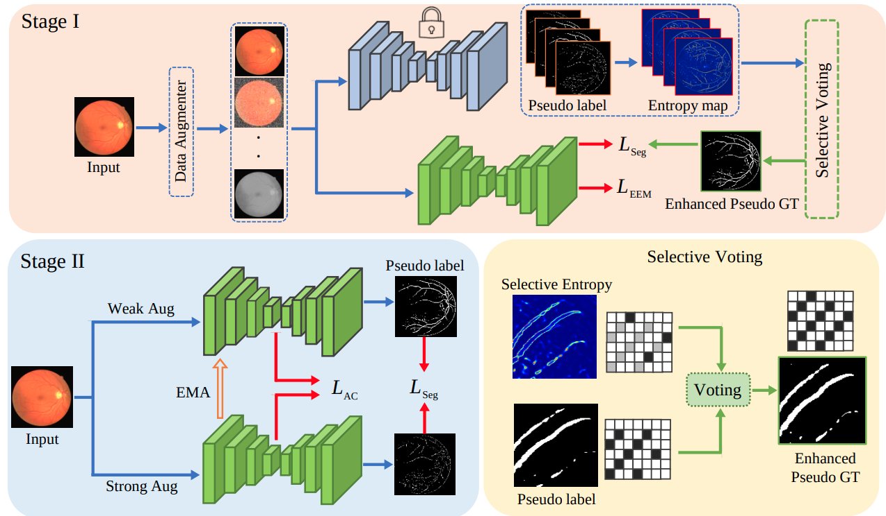

|
I am a Senior Researcher at Previously, I was a postdoctoral researcher at Stanford University, working with Andrew Ng and Curtis Langlotz. I obtained my Ph.D. and M.S from Johns Hopkins University advised by Vishal M Patel. I am glad to be recognized as an |
🔥 Latest News
- January, 2025 -
1 paper accepted at ICLR 2025. - October, 2024 - Won the
Young Scientist Impact Award from MICCAI Society. - August, 2024 -
1 paper accepted at WACV 2025. - July, 2024 -
1 paper accepted at ECCV 2024. - April, 2024 -
4 papers accepted at MIDL 2024. - February, 2024 - Serving as
Area Chair for MICCAI 2024. - October, 2023 -
1 paper accepted at WACV 2024. - November, 2023 - Won the
DAAD AI-Net Fellowship . - August, 2023 -
Invited Talk at MedAI Group. Link for Slides, Video. - May, 2023 -
Invited Talk atAmazon . Link for Slides. - April, 2023 -
Defended my Ph.D. !! Link for Slides. - March, 2023 -
1 paper accepted at MIDL 2023. - February, 2023 -
1 paper accepted at CVPR 2023. - January, 2023 -
1 paper accepted at ICLR 2023. - October, 2022 - Won the
Amazon Research Fellowship . - September, 2022 - Received
Young Scientist Impact Award - Finalist at MICCAI 2022. - August, 2022 -
1 paper accepted at WACV 2023. - August, 2022 - Received
NIH MICCAI Award 2022 , which rewards early career scientists. - June, 2022 -
3 papers accepted at MICCAI 2022. - June, 2022 -
Invited Talk at IEEE SPS Summer School on AI in Healthcare. - May, 2022 - Awarded
Outstanding Automation Paper Finalist (top 3) at ICRA 2022. - March, 2022 - Presented a
Tutorial at ISBI 2022 on medical image segmentation. - March, 2022 -
1 paper accepted at CVPR 2022. - January, 2022 -
1 paper accepted at ICRA 2022. - November, 2021 -
1 paper accepted in IEEE Transactions on Medical Imaging. - June, 2021 -
2 papers accepted at MICCAI 2021. - May, 2021 - Joined Adobe as a Research Intern.
- May, 2021 -
1 paper accepted at ICIP 2021 . - November, 2020 -
1 paper accepted in IEEE Journal of Selected Topics in Signal Processing . - November, 2020 -
1 paper accepted at WACV 2021 . - July, 2020 - Recipient of
MICCAI Student Travel Award 2020 , which rewards first author students of the highest-quality MICCAI papers. - May, 2020 -
1 paper accepted in the IEEE Journal of Selected Topics in Signal Processing . - May, 2020 -
1 paper accepted at MICCAI 2020 (Early Acceptance).
September, 2019 - Awarded - August, 2019 - Joined Johns Hopkins University for my Ph.D with
ECE fellowship .
🔬 Research Publications
|
|
Microsoft Research, Microsoft Health and Life Sciences |
|
|
ICLR 2025
Zepeng Huo*, Jason Alan Fries*, Alejandro Lozano*, Jeya Maria Jose, Ethan Steinberg, Louis Blankemeier, Akshay S. Chaudhari, Curtis Langlotz, Nigam H. Shah |

|
Preprint 2024
Stanford AIMI (L.Blankemeier et al.) Paper |
|
|
ECCV 2024
Nithin GK, Jeya Maria Jose , Vishal M. Patel Paper | Project | Code |
|
|
Preprint 2024
Nithin GK, Jeya Maria Jose , Vishal M. Patel Paper |

|
Preprint 2024
Z. Chen, M. Varma, JB Delbrouck, M. Paschali, L. Blankemeier, DV Veen Jeya Maria Jose , A. Youssef, JP Cohen, EP Reis, EB Tsai, A. Johnston, C. Olsen, TM Abraham, S. Gatidis, Akshay S. Chaudhari, Curtis Langlotz Paper | Project | Demo | Code |

|
WACV 2025
Jeya Maria Jose , Rahul Garg, Andeep Toor, Xin Tong, Weijuan Xi, Andreas Lugmayr, Vishal M. Patel and Anne Menini Paper | Project | Code |
|
|
MIDL 2024
Jeya Maria Jose , Yucheng Tang, Dong Yang, Ziyue Xu, Can Zhao, Wenqi Li, Vishal M. Patel, Bennett Landman, Daguang Xu, Yufan He and Vishwesh Nath Paper | Weights | Pre-training Code |

|
MIDL 2024
Tanvi Deshpande, Eva Prakash, Elsie Gyang Ross, Curtis Langlotz, Andrew Ng, Jeya Maria Jose Paper | Code |
|
|
MIDL 2024
Chih-Ying Liu, Jeya Maria Jose, Camila Gonzalez, Curtis Langlotz, Andrew Ng, Sergios Gatidis Paper |
|
 |
MIDL 2024
Vibashan VS*, Jeya Maria Jose* , and Vishal M. Patel *equal contribution Paper | Code |
|
|
WACV 2024
Rajeev Yasarla, Jeya Maria Jose , Vishwanath Sindagi, Vishal M. Patel Paper |

|
OpenSUN3D, ICCV 2023
Deepti Hegde*, Jeya Maria Jose* , and Vishal M. Patel *equal contribution Paper | Code | Project |
|
|
MIDL 2023
Jeya Maria Jose , Pengfei Guo, Vibashan VS, and Vishal M. Patel Paper | Code |
|
|
CVPR 2023
Aimon Rahman, Jeya Maria Jose, Ilker H, and Vishal M. Patel Paper | Code | Project |

|
ICLR 2023
Jeya Maria Jose, He Zhang, Jianming Zhang, Yilin Wang, Zhe Lin , Jose Echevarria, Yinglan Ma, Zijun Wei, Kalyan Sunkavalli, and Vishal M. Patel Paper | Code | Project |
|
|
WACV 2023
Jeya Maria Jose and Vishal M. Patel Paper |

|
CVPR 2022
Jeya Maria Jose, Rajeev Yasarla and Vishal M. Patel Paper | Code | Project |

|
MICCAI 2022
Jeya Maria Jose and Vishal M. Patel Paper | Code | Project |
|
|
MICCAI 2022
Aimon Rahman, Jeya Maria Jose, Ilker H, and Vishal M. Patel Paper |
|
|
MICCAI 2022
Aimon Rahman, Chaminda Bandara, Jeya Maria Jose, Ilker H, and Vishal M. Patel Paper |
|
|
ICRA 2022 (Outstanding Automation Paper Finalist)
Chaminda Bandara, Jeya Maria Jose, and Vishal M. Patel Paper | Code |
 
|
MICCAI 2021
Jeya Maria Jose, Poojan Oza, Ilker Hacihaliloglu, Vishal M. Patel |
 
|
MICCAI 2021
Pengfei Guo, Jeya Maria Jose, Puyang Wang, Jinyuan Zhou,Shanshan Jiang, Vishal M. Patel |

|
IEEE Transactions on Medical Imaging
Jeya Maria Jose, Vishwanath Sindagi, Ilker Hacihaliloglu, Vishal M. Patel |
|
|
WACV 2021
Jeya Maria Jose and Vishal M. Patel |

|
ICIP 2021
Shao-Yuan Lo, Jeya Maria Jose, and Vishal M. Patel Paper |

|
IEEE Journal of Selected Topics in Signal Processing
Rajeev Yasarla*, Jeya Maria Jose*, Vishal M. Patel *equal contribution |

|
MICCAI 2020 (Oral)
Jeya Maria Jose, Vishwanath Sindagi, Ilker Hacihaliloglu, Vishal M. Patel |
 
|
IEEE Journal of Selected Topics in Signal Processing
Jeya Maria Jose, Rajeev Yasarla, Puyang Wang, Ilker Hacihaliloglu, Vishal M. Patel |
 
|
CVIP 2019 (Best Student Paper Award)
M Anand, A Ashwin Natraj, Jeya Maria Jose, K Subramanian, S Deivalakshmi Paper | Code |
 
|
BraTS, MICCAI Workshop 2019
Mobarakol Islam, Vibashan VS, Jeya Maria Jose, Navodini Wijethilake, Uppal Utkarsh, Hongliang Ren |
 
|
BraTS, MICCAI Workshop 2018
Mobarakol Islam, Jeya Maria Jose, Hongliang Ren |